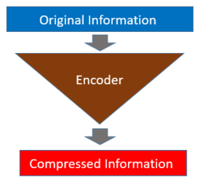
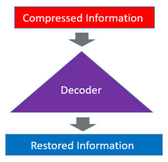
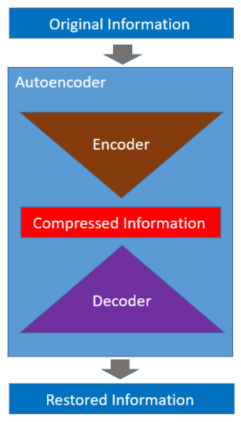
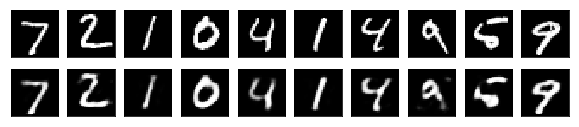
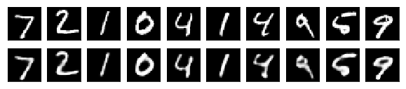
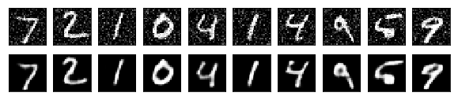

Autoencoder
How to Reduce Image Noises

1 A Quick Introduction to Autoencoder
An autoencoder has two parts: an encoder and a decoder. The encoder reduces the dimensions of input data so that the original information is in a compressed form.

The decoder restores the original information from the compressed data.

The autoencoder is a neural network that learns to encode and decode automatically (hence, the name).

Once learning is complete, we can use the encoder and decoder independently. So, an autoencoder can compress and decompress information. Then, can we replace the zip and unzip command with it?
Not quite.
Autoencoders are data-specific and won’t work well on completely unseen data structures. For example, an autoencoder trained with numbers does not work on alphabets.
Another limitation is that the compression by an autoencoder is lossy. As such, it does not perfectly restore the original information.
Then, what can we do with it?
Autoencoders can be helpful for different things. In this article, I show you how to use an autoencoder for image noise reduction.
NB: The code in this article is based on Building Autoencoders in Keras by Francois Chollet and Autoencoder Examples by Udacity. The notebook code is available on my Github.
2 MNIST
We use MNIST, which is a well-known database of handwritten digits. Keras has MNIST dataset utility. We can download the data as follows:
(X_train, _), (X_test, _) = keras.datasets.mnist.load_data()The shape of each image is 28x28, and there is no color information.
X_train[0].shape(28, 28)The below shows the first ten images from the MNIST database.
3 Simple Autoencoder
We start with a simple autoencoder based on a fully connected layer. One hidden layer handles the encoding, and the output layer handles the decoding.
We flatten each input image to an array of 784 (=28×28) data points, which is then compressed into 32 data points by the fully connected layer.
inputs = Input(shape=(784,)) # 28*28 flatten
enc_fc = Dense( 32, activation='relu') # to 32 data points
encoded = enc_fc(inputs)Then, we decode the encoded data to the original 784 data points. The sigmoid will return values between 0 and 1 for each pixel (intensity).
dec_fc = Dense(784, activation='sigmoid') # to 784 data points
decoded = dec_fc(encoded)This whole processing becomes the trainable autoencoder model.
autoencoder = Model(inputs, decoded)
autoencoder.compile(optimizer='adam', loss='binary_crossentropy')The autoencoder network compresses and decompresses. So, what’s the point? We talk about that later on.
We preprocess the MNIST image data to normalize pixel values between 0 and 1.
def preprocess(x):
x = x.astype('float32') / 255.
return x.reshape(-1, np.prod(x.shape[1:])) # flatten
X_train = preprocess(X_train)
X_test = preprocess(X_test)We also split the train data into train and validation sets.
# also create a validation set for training
X_train, X_valid = train_test_split(X_train, test_size=500)We train the autoencoder, which compresses the input image and then restores it to the original size. As such, our training and label data are the same image data.
autoencoder.fit(X_train, X_train, # data and label are the same
epochs=50,
batch_size=128,
validation_data=(X_valid, X_valid))By training an autoencoder, we are training both the encoder and the decoder at the same time.
We can build an encoder and use it to compress MNIST digit images.
encoder = Model(inputs, encoded)
X_test_encoded = encoder.predict(X_test)We can confirm that the 784-pixel data points are now compressed into 32.
X_test_encoded[0].shape(32,)Let’s also build a decoder to decompress the compressed image to the original image size. The decoder takes 32 data points as its input (encoded data size).
decoder_inputs = Input(shape=(32,))
decoder = Model(decoder_inputs, dec_fc(decoder_inputs))
# decode the encoded test data
X_test_decoded = decoder.predict(X_test_encoded)The result is as follows. The first row has the original images. The second row has the restored images.

As can be seen, the decoded images do not completely restore the original image.
4 Convolutional Autoencoder
We could add more layers to make the network deeper to improve performance. But since we are working on images, we could use a convolutional neural network to improve the quality of compression and decompression.
def make_convolutional_autoencoder():
# encoding
inputs = Input(shape=(28, 28, 1))
x = Conv2D(16, 3, activation='relu', padding='same')(inputs)
x = MaxPooling2D(padding='same')(x)
x = Conv2D( 8, 3, activation='relu', padding='same')(x)
x = MaxPooling2D(padding='same')(x)
x = Conv2D( 8, 3, activation='relu', padding='same')(x)
encoded = MaxPooling2D(padding='same')(x)
# decoding
x = Conv2D( 8, 3, activation='relu', padding='same')(encoded)
x = UpSampling2D()(x)
x = Conv2D( 8, 3, activation='relu', padding='same')(x)
x = UpSampling2D()(x)
x = Conv2D(16, 3, activation='relu')(x) # <= padding='valid'!
x = UpSampling2D()(x)
decoded = Conv2D(1, 3, activation='sigmoid', padding='same')(x)
# autoencoder
autoencoder = Model(inputs, decoded)
autoencoder.compile(optimizer='adam',
loss='binary_crossentropy')
return autoencoder
# create a convolutional autoencoder
autoencoder = make_convolutional_autoencoder()Let’s examine the layers of the convolutional autoencoder.
Layer (type) Output Shape Param #
=================================================================
input_3 (InputLayer) (None, 28, 28, 1) 0
_________________________________________________________________
conv2d_1 (Conv2D) (None, 28, 28, 16) 160
_________________________________________________________________
max_pooling2d_1 (MaxPooling2 (None, 14, 14, 16) 0
_________________________________________________________________
conv2d_2 (Conv2D) (None, 14, 14, 8) 1160
_________________________________________________________________
max_pooling2d_2 (MaxPooling2 (None, 7, 7, 8) 0
_________________________________________________________________
conv2d_3 (Conv2D) (None, 7, 7, 8) 584
_________________________________________________________________
max_pooling2d_3 (MaxPooling2 (None, 4, 4, 8) 0
_________________________________________________________________
conv2d_4 (Conv2D) (None, 4, 4, 8) 584
_________________________________________________________________
up_sampling2d_1 (UpSampling2 (None, 8, 8, 8) 0
_________________________________________________________________
conv2d_5 (Conv2D) (None, 8, 8, 8) 584
_________________________________________________________________
up_sampling2d_2 (UpSampling2 (None, 16, 16, 8) 0
_________________________________________________________________
conv2d_6 (Conv2D) (None, 14, 14, 16) 1168
_________________________________________________________________
up_sampling2d_3 (UpSampling2 (None, 28, 28, 16) 0
_________________________________________________________________
conv2d_7 (Conv2D) (None, 28, 28, 1) 145
=================================================================
Total params: 4,385
Trainable params: 4,385
Non-trainable params: 0
_________________________________________________________________The UpSampling2D will repeat the rows and columns twice. It is effectively reversing the effect of the MaxPooling2D.
In short, the UpSampling2D is doubling the height and width.
(4,4) => (8,8) => (16,16)If you look closely, you may have noticed that the conv2d_13 (Conv2D) uses the padding='valid' that reduces the height and width to (14,14) so that we can up-sample again to (28,28), which is the original size of MNIST images.
Now, we reshape the image data to the format the convolutional autoencoder expects for training.
# reshape the flattened images to 28x28 with 1 channel
X_train = X_train.reshape(-1, 28, 28, 1)
X_valid = X_valid.reshape(-1, 28, 28, 1)
X_test = X_test.reshape(-1, 28, 28, 1)
autoencoder.fit(X_train, X_train,
epochs=50,
batch_size=128,
validation_data=(X_valid, X_valid))We want to see the quality of compression/decompression, for which we do not need to build separate encoder and decoder models. So, we simply feed-forward test images to see what the restored digits look like.
X_test_decoded = autoencoder.predict(X_test)
Although imperfect, the restored digits look better than the ones restored by the simple autoencoder.
5 What about the Noise Reduction?
Let’s try the noise reduction effect using the convolutional autoencoder. We add random noises to the MINST image data and use them as input for training.
def add_noise(x, noise_factor=0.2):
x = x + np.random.randn(*x.shape) * noise_factor
x = x.clip(0., 1.)
return x
X_train_noisy = add_noise(X_train)
X_valid_noisy = add_noise(X_valid)
X_test_noisy = add_noise(X_test)We train a new autoencoder with the noisy data as input and the original data as expected output.
autoencoder = make_convolutional_autoencoder()
autoencoder.fit(X_train_noisy, X_train,
epochs=50,
batch_size=128,
validation_data=(X_valid_noisy, X_valid))During the training, the autoencoder learns to extract essential features from input images and ignores the image noises because the labels have no noise.
Let’s pass the noisy test images to the autoencoder to see the restored images.
X_test_decoded = autoencoder.predict(X_test_noisy)
Not bad, right?